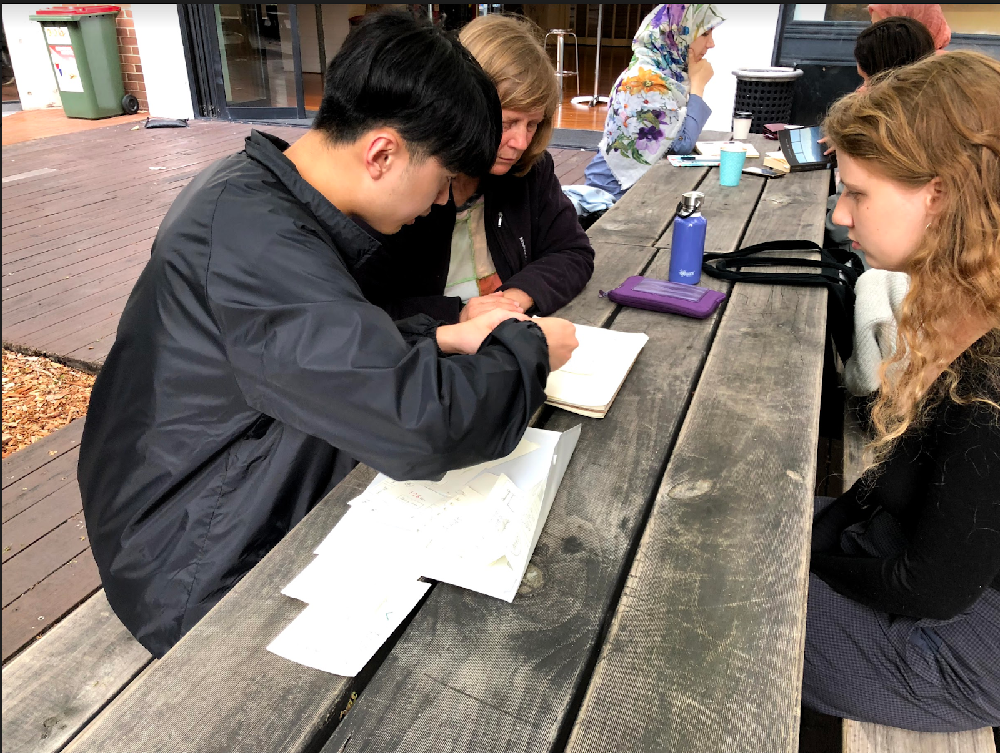

Process Journal
Introduction
This process journal describes how the final product comes up and showing the process of how we overcome problems of the interface based on the methods taught in lectures and tutorials.

1. Background research
Group Discussion
In term of the general idea of the user interface has given in the welcome week, we started to think what kind of autonomous vehicles or drones would really match the user needs and would have a great potential in the marketing. The first idea was raised by Ge, it is an autonomous garbage truck that can automatically monitor the bins on streets and empty the full bins. It can work 24 hours a day to clean and tidy streets, while also reducing the chances of garbage truck drivers' accidents caused by driving at night. In addition, the government can set up different quantities of automatic garbage trucks through the population density of each street. At the end of week 2 we picked it to be one of our initial concepts. However, in week 3’s tutorial, we found that the driver-less garbage truck would need connecting with government systems. That means our target user group will be only the government, and it is difficult to find a person who works in the government while known the system of garbage management. So we gave up on this concept. Also, in the third week, we thought that the interface does not have to be placed on a drone or a vehicle. We found that most of the scooters don't have a display, so why don't we make an interface of Autonomous scooter (AMS)? After a week of repeated discussions, we decided to design an unmanned scooter interface and began the individual background check.
 Figure 1.1 - Automation levels of autonomous cars, AMS is in level 5.
Figure 1.1 - Automation levels of autonomous cars, AMS is in level 5.
Individual research
The first thing in my mind was about where it could be used and what kind of people would want to use it. Three driver-less scooters have been designed through an investigation into existing driverless scooters. First, Panasonic’s self-driving wheelchairs were tried at the airport in Tokyo in 2017. Second, the Stair-climbing iBot was used to help people with reduced mobility climb the stairs but was discontinued in 2009 due to too high pricing. Third, the driver-less scooter that serves the people with reduced mobility, but it is only a preliminary idea and has not started production. In my opinion, the failure of the second product is a lesson because the wheelchair used only when climbing stairs is focusing on a little part. The third driverless scooter has not been put into production but has very good marketing potential. Because the population of aged 60 and over is estimated to be approximately 962 million, accounting 12.8% of the world's total population. The global population might reach 9.8 billion by 2050, with about 3.1 billion elderly people over 60.

In the background survey, I used two methods, questionnaires and interviews. A total of 55 people filled out the questionnaire, and I found out that 5 of participants who can be the target users and I did a detailed interview with each of them. More than 90% of the participants in the questionnaires concluded that people with mobility difficulties will need autonomous mobility scooters. That means they are most likely to be the main user group for the product. So most of the questions I asked in the subsequent interview were for people with limited mobility. Based on this background research, I think that a driverless scooter designed for people with reduced mobility is feasible in the nowadays. At the same time, I used the infinity diagram to summarize some of the user requirements. For example, they hope that AMS is safe and convenient and could use some real-time health detection while they use AMS.

2. Evaluation Report
Group discussion & Sharing results
After week 4’s presentation, we start to share the individual background research in the studio of week 5, but only I and Liangyi attended the studio to share the findings in the first assignment. According to her research, most of the participants agreed that AMS can be very useful in the airport and scenic. However, this result is quite different from my research and after an investigation, we found that the attraction is not very suitable for the scooter because it will produce road congestion, damage to ancient buildings, and encounter stairs. Moreover, although the airport is relatively empty and flat, there are some problems, such as the shape of the scooter. If you use a scooter to queue up, it will cause road congestion. If you only use the scooter to transport the baggage, it will cause loss of users’ baggage. Another type of safety check will cause the car to change. We originally wanted to use the scooter to provide convenience to people, but in these respects, the scooter seems to be no longer convenient. Hence, we decided to ask where the participants think the best place to use AMS bring the user testing because they can give us more real feedback when they are testing it. And we will confirm where would be the main place putting AMS. We believe that the elderly are our main users, so in this user testing we mainly look for the elderly as testers.

Brainstorm & Drawing concepts
We plan to draw at least two initial concepts for everyone in the group. Bur because Ge still did not attend the class in week 6, we decide drawing the sketch of concept individually and discuss which concepts we will be focusing on in the week 7’s studio. During that week, I drew 3 sketches of the interface of AMS. Two for phone size, one for iPad size. I thought to only design the phone’s interface, But Christine suggested that we do iPad size because it is easy to meet the font and icon size that the elderly need. Also, I and Liangyi found in Campbell’s research also said generally application’s designs for elderly avoid font sizes smaller than 16 pixels. In week 7 we finally decide to make an iPad size interface of AMS.


User testing
We planned Ge mainly focus on the summarize our idea and result to the PowerPoint, I would focus on the user testing and Liangyi could build a wireframe and explain the details of our design. But at the end of the week, we got bad news that Ge’s father died in an accident. Which is also the reason that she missed those classes, and then she decided to discontinue for this semester. I feel so upset about this happened to my friend. In week 8, Liangyi and I planned to work together for the user testing, wireframes and the PowerPoint. In the eighth week and the mid break we drew two concepts with storyboard and started testing their usability. This test lasted until the end of the ninth week. We found a mother and her daughter to test for us, two design student and we gave remote tests to our elderly relatives by phone. Design students are not our target user group, but they can give us some good ideas of the layout and the interaction. During the testing process, I led them to use the application and Liangyi recorded the content of their “think aloud” and observe their behaviour.
Report
In week 10, we spend more than 40 hours for the final PowerPoint and wireframe. WeChat calling has been used in most of time during we are working for the assignment. Because I used windows laptop, Liangyi built the wireframe and I wrote a summary of the results and user needs from the background research, explaining each screen’s details and why we designed it like this. And we put justifications in the slides to prove our design, wrote the process of how we evaluate the wireframe etc.


3. Interactive Prototype
We know that we will spend much more time than other group because we lost a groupmate, so we start very early this time. After the evaluation report due, I borrowed a MacBook from my friend to work for the interactive prototype. Liangyi finished the rough design of it and I improved the layout, colour scheme and fix problems. The first design has been made in the week 11, we used Invision in our laptop to test with participants while we asked them to seat on a chair as old user seating on AMS. That is based on the feedback from evaluation report. We redesigned the interface three times during the testing, while made the walkthrough video and the final user flowchart. In the studio of week 12, we find some other issues with the interface, so we wrote them into the final result & recommendation on companion website.